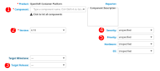
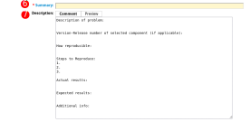

Red Hat Relationship
Landing code in the OpenShift release is just one part of the integration journey. Once the initial work of integrating a new infrastructure platform is complete, there is extended task of maintainance and feature improvement.
Depending on the depth of the partner agreement with Red Hat, it is reasonable to expect that there will be continuing work in the form of bug fixes and continued maintenance. In some cases, due to timing, it is possible that the initial work which lands in the release payload will need further engineering to reach the expected feature parity.
Open source
All components that are released by Red Hat are built using open source development practices. As such, the components that are included in OpenShift Container Platform releases will have their source code stored in a publicly accessible location (usually the OpenShift GitHub organization).
The open source development model encourages collaboration from the community of users who operate and utilize the software. This means that bugs can be reported by anyone, and likewise solutions can also be proposed by anyone in the community.
The components that you build for OpenShift will be released as open source software. Once they are released, you have the opportunity to create fixes collaboratively and transparently with the community. This is a core principle to the continuing relationship with Red Hat and the wider user community.
Bugzilla
Red Hat uses Bugzilla as the primary point of interaction for reporting and tracking defects. Red Hat is also in the process if mirroring bugs from Bugzilla into a public Jira instance as well. In the future, Jira may become the primary interface, but for today you will need to use Bugzilla.
Bugzilla workflow
Bugs within Red Hat's bugzilla contain a state that indicates their current status. In general these states should flow from top to the bottom of the list following this paragraph. Engineers should never move bugs further down than MODIFIED state.
Bug States
-
NEW - only bugzillas with insufficient information (no reproducer, missing information from customer) and bugzillas where it is not sure who will take care of them (more people involved on the component) should be in this state.
-
ASSIGNED - the most common bugzilla status, someone is assigned to the bugzilla and has enough information to further investigate and resolve the issue.
-
POST - a patch or solution believed to resolve this matter has been proposed (POSTed) for inclusion to the appropriate git repo.
-
MODIFIED - fix is in git, but was not tested yet and not released for users. The appropriate code repo has been MODIFIED with the fix. (This is the last state engineers should use.) If your PR properly linked to the BZ this should happen automatically.
-
ON_QA - QA is looking at the fix. If it fails QA they will move it back to ASSIGNED. The 'automated release' team is responsible to move bugs from MODIFIED to ON_QA when the fix is available in a nightly build for testing.
-
VERIFIED - QA tested the bugzilla and the bug seems to be fixed.
-
RELEASE_PENDING - An errata was fully tested and the bug will get closed automatically once the images are publicly available.
-
CLOSED - bugzilla is resolved, no further actions are needed (refer to bugzilla statuses for all variants of CLOSED).
Reporting an OpenShift bug
To report a new OpenShift bug, navigate to the Bugzilla webpage and file the bug by selecting "New", then "Red Hat", then "OpenShift Container Platform". The following link is a shortcut to create a new bug for the OpenShift Container Platform:
New Bug for OpenShift Container Platform
There are several fields to note when creating a new bug. The next few images will highlight the fields you need to fill.
 
Bugzilla Field Descriptions
-
Component is the OpenShift component to which the bug is being reported, for example Installer, or Cloud Compute. Choose the component which best fits the bug. Do not worry if you don't see an exact match for your component, choose the closest match and then during triage the bug will be re-assigned if necessary. If you know the GitHub repository of the component you are creating a bug against, you can look in the
OWNERSfile in the root of the repository to see the component information. -
Version is the OpenShift version against which this bug is being reported. By default this field will contain the version that is being released next. If reporting a bug to a previously released version of OpenShift, select that version.
-
Target Release is the OpenShift version for which a solution is being proposed. This is used by Red Hat to indicate when engineering intends to fix a bug. It does not need to be set when creating a new bug.
-
Severity is the impact that this bug has on OpenShift. You should set this field based on the nature of the bug as follows:
- Urgent - Causing a breakage/outage/unrecoverable issue.
- High - Blocking functionality from succeeding.
- Medium - Impacts functionality but critical operations remain functional or occurs under specific circumstances.
- Low - Everything else.
-
Priority is set by Red Hat as a guideline for how the bug should be evaluated and planned. Priority should not be adjusted by anyone other than Red Hat component team members.
-
Summary is a concise description of the bug. This is most frequently what users will see when searching for issues, so it should contain some high level identification of underlying problem.
-
Description is where the bug will be described in greater detail. The template text in this field will guide you in creating content for the bug.
New components in Bugzilla
When adding new components to OpenShift, for example a new cloud controller manager, the new component will need to be added to Bugzilla by Red Hat team members. After you have completed the process of adding your repository to the OpenShift organization on GitHub and have created the necessary Prow configuration files in the OpenShift Release repository, your component should be added to Bugzilla. If you have completed these steps and do not see your component in Bugzilla, please reach out to your Red Hat contacts.